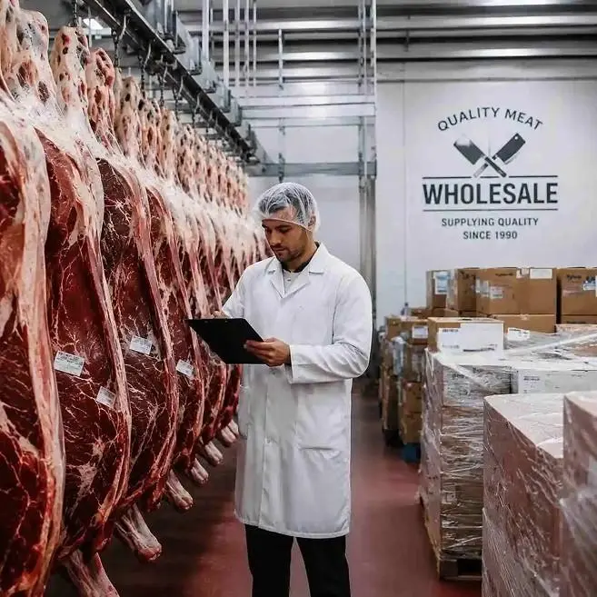

Our Story
Fresh Meat, Honest Service —
Since Day One
Riyas Stock Point has been offering quality meat products to many people over the years. We know that everyone wants to receive clean meat that is fresh and well-handled. That is why we are keen on every stage of selling our products to our customers.
Being one of the most reputed names in the industry and one of the finest meat shops in Dindigul, we believe that customer satisfaction should always be our priority. Every visit is welcomed with fresh meat and a great shopping experience — whether you are buying for daily cooking, family gatherings or special events.
We have just one aim — to offer you fresh chicken and mutton, follow clean practices and develop long-term relations with our valued customers.
